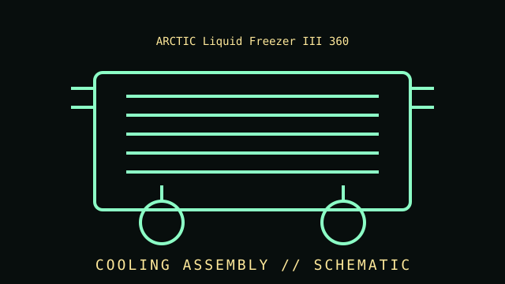

[ INDIVIDUAL COMPONENT // COOLING ]
ARCTIC Liquid Freezer III 360
Closed-loop CPU cooler with a 360 mm radiator, three radiator fans, integrated pump, and a small VRM fan. 360 mm all-in-one liquid CPU cooler, Liquid Freezer III generation.

IDENTIFICATION WARNING: Match the complete model, variant, revision, socket kit, and region to the product label and manufacturer manual. Do not assume the specifications apply to similarly named versions.
Specifications
| Catalog subcategory | All-in-one liquid coolers |
|---|---|
| Catalog identity | ARCTIC Liquid Freezer III 360 |
| Era / family | 360 mm all-in-one liquid CPU cooler, Liquid Freezer III generation. |
| Radiator | 360 mm class aluminum radiator; radiator thickness and total installed clearance include tubing, fittings, and fans and must be checked against the exact manual. |
| Fans | Three 120 mm P12-series PWM radiator fans supplied with the 360 mm model; check the exact revision and product SKU. |
| Pump and VRM cooling | Integrated pump/block assembly with a small VRM fan; the supplied cable supports separate control or a single all-in-one PWM connection. |
| Socket support | Model-specific mounting support includes current Intel and AMD desktop sockets listed by ARCTIC; consult the exact compatibility and installation documentation. |
| Identification | Liquid Freezer III 360 family; RGB/ARGB versions and regional or later revisions have distinct SKUs and may differ in accessories. |
Compatibility, installation & service
- Confirm the exact socket kit, case clearance, board layout, mounting orientation, and manufacturer compatibility list before installation.
- Connect fans and pumps using the documented pinout and control cable; remain within the motherboard or controller header's electrical limits.
- Check fan direction, cooler contact, tubing or cable clearance, and temperature response at first startup.
- Do not open sealed liquid-cooling assemblies or continue operation after suspected leaks, abnormal pump noise, or loss of cooling.
Model-specific notes
Check radiator length, thickness, tube reach, motherboard VRM/heatsink clearance, and case mounting position before installation. Route tubing without kinks, connect the chosen control harness as documented, and stop using the system if liquid leakage or pump failure is suspected.
Sources & further reading
- ARCTIC — Liquid Freezer III 360 product informationManufacturer product page; verify the full product number and regional revision.
- ARCTIC — Liquid Freezer III 360 support and installationManufacturer compatibility, support, or installation reference; model-specific documentation takes precedence.
Published thermal and acoustic performance depends on test setup, processor, case, fan control, and ambient conditions.